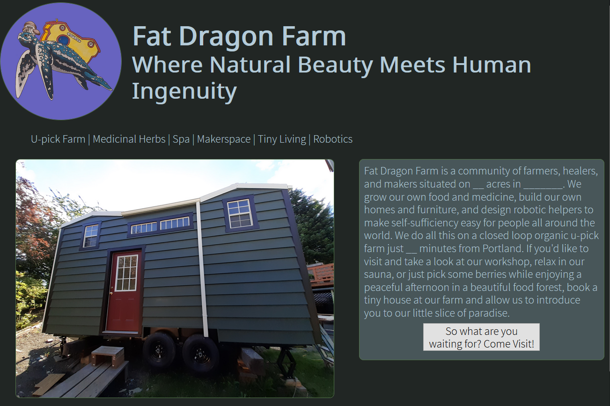

My name is Griffin; I'm a programmer and woodworker based in Portland, Oregon. I'm passionate about AI, robotics, and game development; there is nothing more
exciting to me than creating dynamic code that takes on a life of its own. I'm especially interested in how robotics and artifical intelligence can be used
to reduce humanity's impact on the planet and usher us forward into an age of sustainability. I am a full-stack developer who particularly loves working on the
nitty-gritty logic of the back end; to me, nothing quite compares to the thrill of solving all the little puzzles that are needed to make my code work.
When I'm not coding, you can find me in my garden conducting experiments in permaculture or working on my latest project in green carpentry.

Varmints
A tiny ecosystem that uses pygame to simulate a fight for survival among rabbits, foxes, and grass. Varmints includes code that simulates evolution, allowing each species to adapt to their environment. I am continuing to work on this project, and intend to add new species, new survival strategies, and more complex environments with random events that drive evolution. Download Varmints and simulate evolution!
